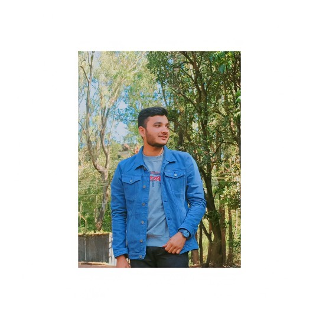

Personal Information
My name is Zakir. I was born on October 19th, 2003
Education
I have done my school graduation from Rumi EnglishHighSchool in 2020 with a Science.And currently pursuing B.tech in Ganpat University
Career
After school, I started working as a Computer Engineer student at Ganpat University. I have been Studying there for 1.5 years.
Hobbies
In my free time, I enjoy playing basketball, hiking, and watching movies.Now i can make wesbite and make more canva design as much as i can